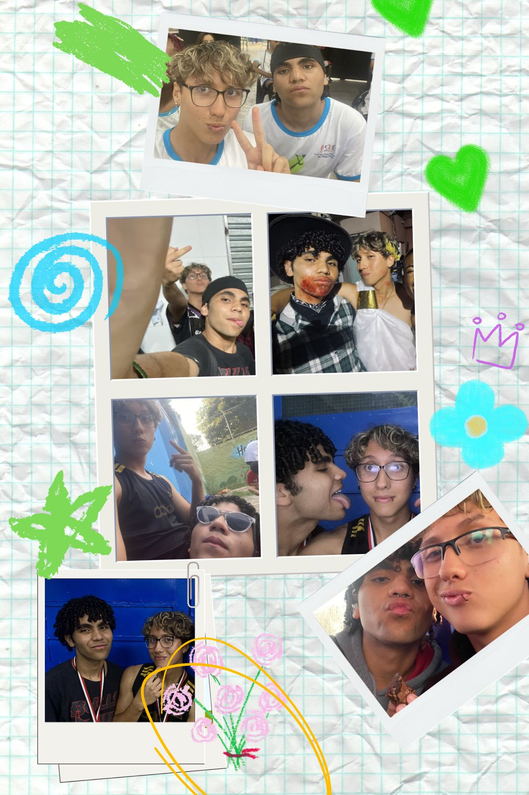

1) Qual foi o dia que a gente se conheceu?
2) Quando foi o primeiro “te amo”?

Raul, sei que você já ganhou muitas cartas de pessoas que nem estão mais do seu lado. Mesmo que talvez eu seja uma futura pessoa dessas, não quero ser igual às outras. Sou TOTALMENTE DIFERENTE (:
Você foi algo extraordinário na minha vida, pois eu aprendi como lidar como ser humano. Eu era uma pessoa terrível, mas nunca tinha tido uma relação de afeto com amizade, eram só colegas. Você chegou e me tratou bem o tempo todo, sem ligar para os meus defeitos. Isso fez eu ter um bloqueio… eu não conseguia ser “bicho” com você.
Pois eu… eu te amava, cara. Eu só não sabia ainda! Não bater em você e segurar minhas palavras fez eu começar a perceber o que machuca e o que não machuca. Hoje eu consigo ter amizades incríveis onde não sou mandão e insuportável.
Raul, de verdade, independente do que você foi no seu passado, VOCÊ ME MUDOU COMO PESSOA. Vou literalmente lembrar de você para sempre. Não tem como não lembrar.
TE AMO, IRMÃO. 💚
Quero te levar pra vida e poder ter o conforto de você por perto.
FELIZ ANIVERSÁRIOOOOOOOOOOOOOOOO!!!!!!!!!!
13/05/2026